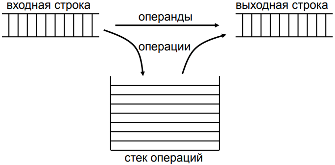
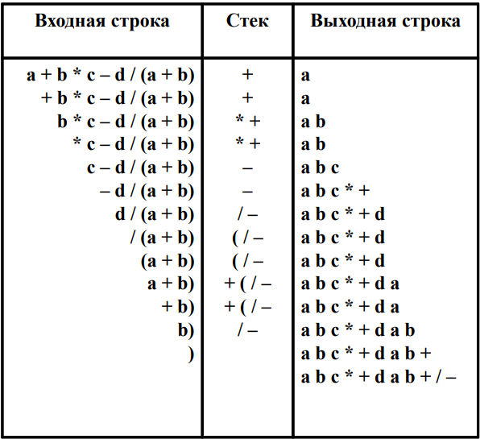

Обратная польская запись (англ. Reverse Polish notation, RPN) — форма записи математических и логических выражений, в которой операнды расположены перед знаками операций.
Каждому ограничителю, который может встретиться в арифметическом выражении присваивается приоритет.

- Если приоритет входного знака равен 0 то новый знак
добавляется в стек ничего не выталкивая.
- Если приоритет входного знака больше приоритета знака,
находящегося в вершине стека, то новый знак добавляется в стек
ничего не выталкивая.
- Если приоритет входного знака меньше или равен приоритету
знака, находящегося в вершине стека, то из стека выталкивается
и переписывается в выходную строку знак, находящийся в
вершине, а также следующие за ним знаки с приоритетами
большими или равными приоритету входного знака, после этого
входной знак добавляется в стек.
- Символы «)», «(» обрабатываются особым образом: «(» –
просто записывается в стек и не выталкивает из него ни одного
знака, в то же время её не может вытолкнуть ни один знак, кроме
закрывающей скобки. Закрывающая скобка («)») выталкивает из
стека всё, вплоть до открывающей скобки, и с ней они взаимно
уничтожаются.
- По окончании входной строки все символы из стека
переписываются во входную строку.
